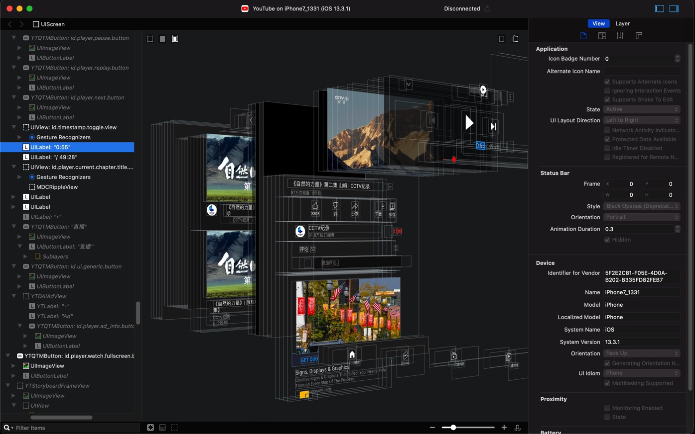
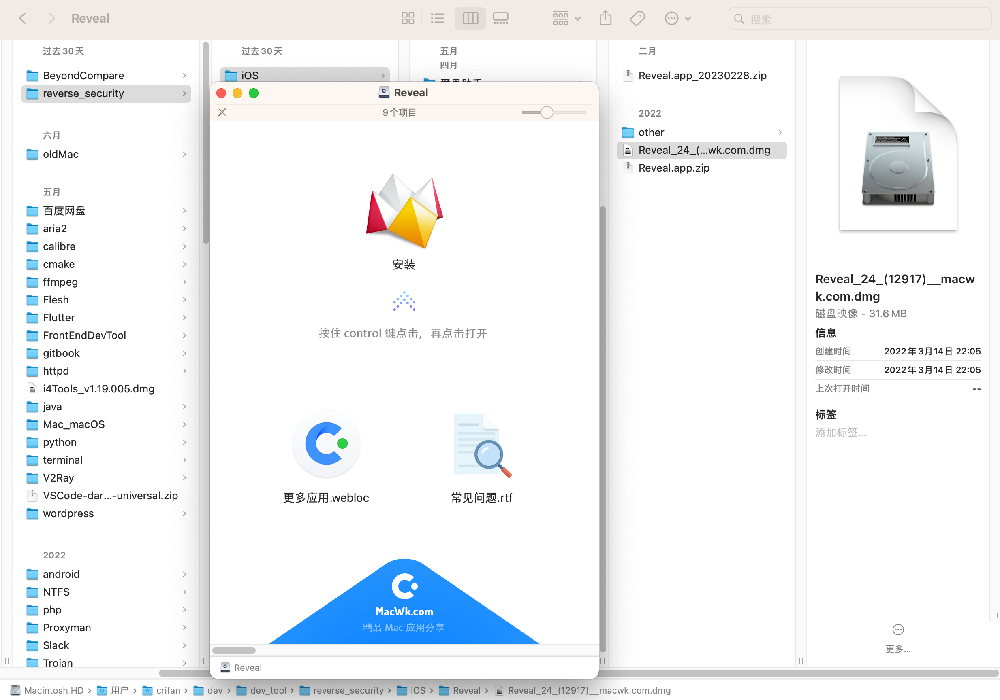
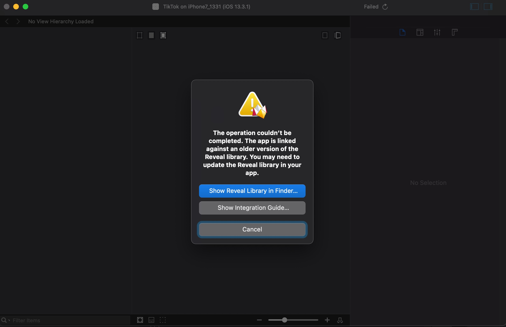
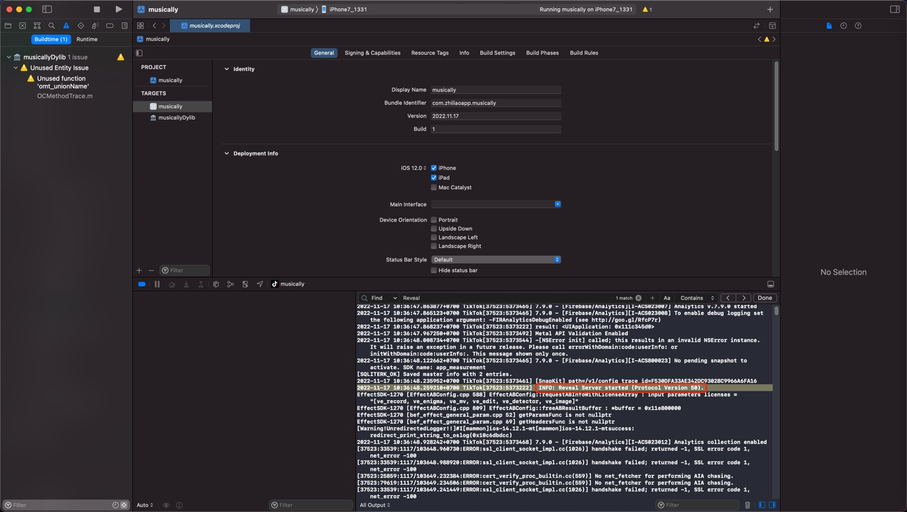
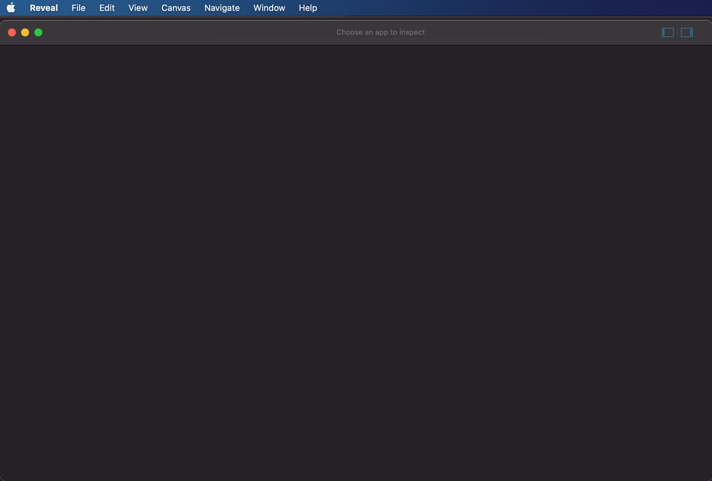
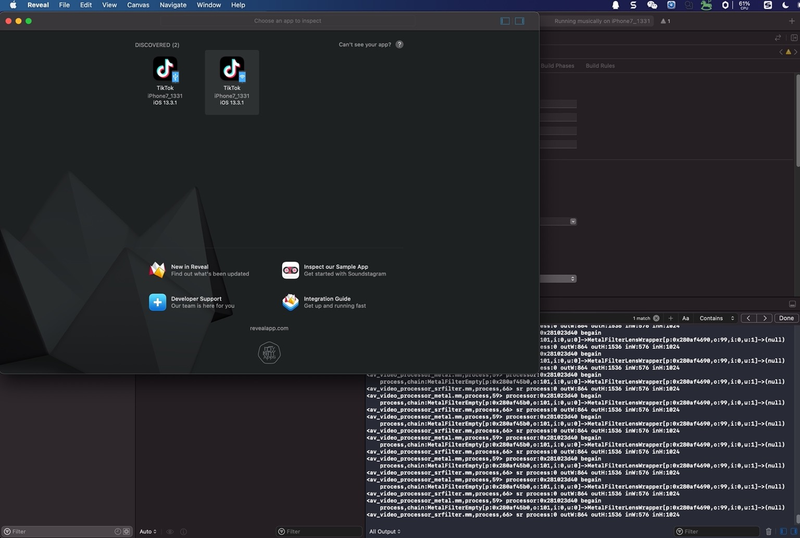
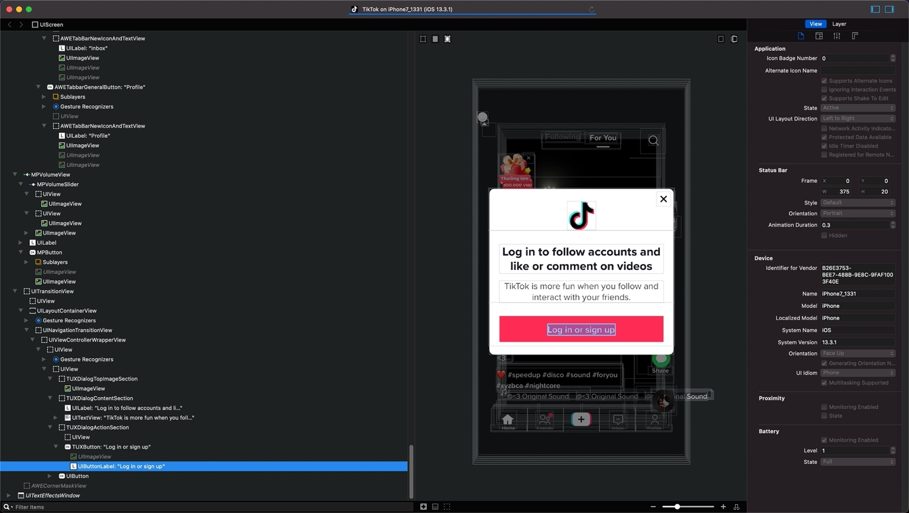
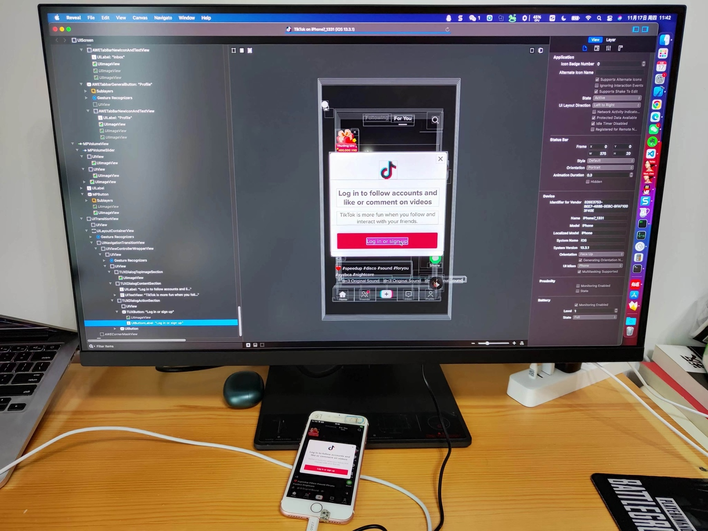
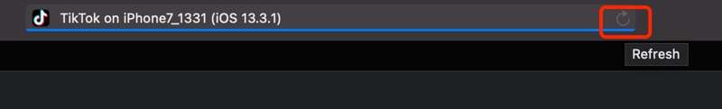

Reveal
TODO：
- 【已解决】用Reveal查看抖音UI界面中点赞关注按钮相关的类和实现
- 【记录】找抖音关注按钮响应事件：pactions
- 【记录】通过Reveal查看页面元素找YouTube广告相关类
- 【记录】通过Reveal查看YouTube广告页面元素
iOS逆向中，用来调试界面元素，比较好用的工具之一就是：Reveal
- 效果举例
- YouTube
- 
- YouTube
Xcode+MonkeyDev配合Reveal调试UI界面元素
下载安装Reveal
从网上下载到Reveal的dmg
注：https://www.macwk.com 网站2022年10月5日已关站，无法访问
然后安装：

确保RevealServer.framework版本一致
Mac：Reveal.app中的RevealServer.framework- 默认位置：
/Users/{YourUserName}/Library/Application Support/Reveal/RevealServer/iOS/RevealServer.framework
- 默认位置：
iPhone：所运行的是MonkeyDev内部集成的RevealServer.framework- 默认位置：
/opt/MonkeyDev/Frameworks/RevealServer.framework
- 默认位置：
要确保版本一致。
否则Reveal.app连接iPhone调试时会报错：
The operation couldn't be completed. The app is linked against an older version of the Reveal library. You may need to update the Reveal library in your
app.

解决办法：
点击弹框中的：Show Reveal Library in Finder…，会自动打开（当前Mac中）最新版本的RevealServer.framework
/Users/{YourUserName}/Library/Application Support/Reveal/RevealServer/iOS/RevealServer.framework
然后将其拷贝过去，替换掉旧的MonkeyDev的：
/opt/MonkeyDev/Frameworks/RevealServer.framework
即可。
注：
/opt/MonkeyDev/Frameworks/- 是MonkeyDev的常见的默认的安装路径
- 复制时需要root权限
- 所以命令行复制时，需要sudo，否则会报错没有权限
- Finder界面中复制时，需要输入当前Mac用户的密码
用XCode+MonkeyDev调试iOS的app(ipa)
其中Xcode中能输出=能搜到对应的log：
2022-11-17 10:36:48.259210+0700 TikTok[37523:5373222] INFO: Reveal Server started (Protocol Version 50).

表示Reveal Server服务已启动
注意：
- 确保最后一条Reveal的log是Started
- -》意思是Reveal的确在运行
- 否则也可能遇到，中间Reveal是Started，但之后还有Stopped的log，则表示Reveal服务是停止掉了
- 那样的话，Reveal是无法使用的
打开Mac中的Reveal.app，去连接和调试设备中的app的界面
Reveal->File->New Tab
点击Discovered所显示出iPhone设备了
注意：
- 首次启动Reveal后，往往看不到iPhone设备（中的app）
- 图
- 
- 解决办法：
- 关闭Reveal，重启Reveal，即可。
- 图
一般正常会出现2个按钮：
- Wifi
- USB
按道理USB的连接更稳定些，所以一般点击USB的

即可连接和正常调试app的UI界面元素了：

Mac电脑+iPhone手机的效果：

刷新页面
如果app端页面刷新了，可以点击Tab顶部的右上角的刷新按钮，即可刷新

注：
此处Refresh按钮是灰色的，原因是：此处Tiktok的app的UI界面元素内容太多，导致一直在加载，始终加载不能完全结束，所以无法刷新
不过一般无所谓，可以重新关掉窗口，重新点击连接设备，从而分析app上最新的界面元素的。